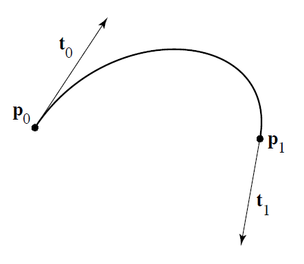
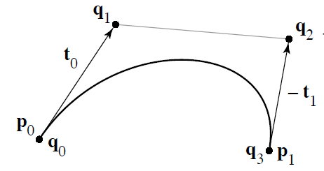
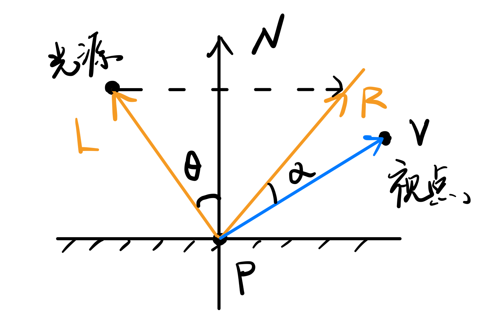

CH1 绪论
- Q：计算机图形学主要的研究内容是什么？
- 计算机中图形的表示方法，利用计算机进行图形的计算、处理和显示的相关原理与算法
- Q：列举计算机图形学的应用领域
- 计算机辅助设计与制造（CAD/CAM）
- 可视化
- 计算机动画
- 用户接口
- 计算机艺术
- 真实感图形实时绘制与自然景物仿真
- Q：一个图形系统通常由哪些设备组成
- 图形处理器（显卡）：显示主芯片（GPU）、显示缓存（显存）、数字模拟转换器
- 图形输入设备：常用鼠标、键盘
- 图形输出设备
- Q：图形和图像的区别
- 图形：隐含几何属性，更强调场景的几何表示，是由场景的几何模型和景物的物理属性共同组成的
- 图像：是以位图形式存在的灰度信息
- Q：CRT显示器逐行扫描与隔行扫描
- Q：LCD显示器技术指标
CH2 光栅图形学
2.1 直线段的扫描转换算法
本节各算法均以|k|<=1为例书写，对于|k|>1的情况需将xy地位互换，增量改为∆x=1/k
控制|k|范围，目的是使每次的增量控制在(0,1)，否则会出现“断点”
1. 数值微分法
思想
- 直线方程：
y = kx + b
- 每次像素变化
∆x=1(|k|<=1)：∆y=k∆x=k
- 选择绘制的像素点：
int(y+0.5)，即先四舍五入再取整
算法
1
2
3
4
5
6
7
8
| void DDA(){
k=(y1-y0)/(x1-x0);
y=y0;
for(x=x0; x<=x1; x++) {
drawpixel(x, int(y+0.5));
y += k;
}
}
|
2. 中点画线法
思想
- 针对当前像素位置的下一个位置，在
(x+1,y) 和 (x+1,y+1) 中二选一
- 判断两个位置的中点与直线的位置关系，中点在上则取
y+1，否则取y
- 点与直线的位置关系
F(x,y)=ax+by+c(控制A的符号与k相同)
- 进一步使用增量优化：定义
d = F(x+1,y+0.5) = F(x,y) + a + 0.5b
d>=0：点在上方，取(x+1,y)。下一个增量∆d = F(x+2,y+0.5) = ad<0：点在下方，取(x+1,y+1)。下一个增量∆d = F(x+2,y+1.5) = a+b-
进一步优化，为避免浮点数，均×2：d0=2a+b; d1=2a; d2=2(a+b);
算法
1
2
3
4
5
6
7
8
9
10
11
| void mid() {
d0 = 2*a+b;
d1 = 2*a; d2 = 2*(a+b);
x=x0, y=x0;
drawpixel(x,y);
while(x0 <= x1) {
if(d0>=0){ x++; d0+=d1; }
else { x++; y++; d0+=d2; }
drawpixel(x,y);
}
}
|
3. Bresenham算法
思想
- 判别式：误差项为直线到最近下方列的距离
- 该距离<0.5，则取下（d-0.5<0）
- 否则，取上
∆x=1(|k|<=1)：∆y=k∆x=k
- 令
e=-0.5
- 每次更新：
e += k
- 若e>=0：
e-=1
算法
1
2
3
4
5
6
7
8
9
| void Bresenham() {
e = -0.5, x=x0, y=x0;
k=(y1-y0)/(x1-x0);
for(int i=0; i<dx; i++){
drawpixel(x,y);
x++; e+=k;
if(e>=0){ y++; e-=1; }
}
}
|
2.3 多边形的扫描转换与区域填充(泛滥填充)
1. 多边形的扫描转换
1
2
3
4
| typedef struct ET {
double x, ymax, m;
ET *next;
} NET, AET;
|
- 扫描线算法
- 增量法计算：在更新y值没有到ymax是，x值递增m(delta_x)
1
2
3
4
5
| pseudo-code:
1. NET[i]按x递增，插入AET
2. 若允许自交，按x值，使用冒泡排序AET
3. AET配对画图
4. 增量法更新AET
|
2. 区域填充（泛滥填充）
区域是已经表示成点阵形式的填充图形，是像素集合。区域用内点和边界表示。
区域分为四连通区域和八连通区域（会出现边界点交叉导致封闭，但图形是一个整体的情况。因此是八连通）
- 区域填充算法（泛滥填充算法）
- DFS/BFS：在种子点通过4(或8)个方向的移动完成对内点的填充
- 区域填充的扫描线算法
- 特别地，其与扫描线填充不同（扫描线填充为边界的两两配对）：
1
2
3
4
5
6
7
8
9
10
11
12
13
14
15
16
17
18
19
20
21
22
23
24
25
26
27
28
29
30
31
| void ScanLineFill4(int x, int y, Color oldColor, Color newColor)
{
typedef struct{int x,y;} Seed;
int xl, xr;
bool spanNeedFill;
stack<Seed> S;
S.push({x, y});
while(!S.empty())
{
Seed u = S.top(); S.pop();
x = u.x; y = u.y;
for(xr=x;readPixelRGB(xr, y) == oldColor;xr++)
drawPixel(xr, y, newColor);
xr--;
for(xl=x-1;readPixelRGB(xl, y) == oldColor;xl--)
drawPixel(xl, y, newColor);
xl++;
for(int yy=y-1;yy<=y+1;yy+=2)
{
x = xl;
while(x <= xr)
{
spanNeedFill = false;
for(;readPixelRGB(x, yy) == oldColor;x++) spanNeedFill = true;
if(spanNeedFill) S.push({x-1, yy});
while(readPixelRGB(x, yy)!=oldColor && x<=xr) x++;
}
}
}
}
|
2.5 裁剪
1. 直线段裁剪(Cohen-Sutherland、中点分割裁剪、Liang-Barskey)
Cohen-Sutherland
- 算法思想：先对窗口9个部分编码，得到对应线段
P0P1编码code0, code1，逻辑运算
- 窗口区域编码：
D3 D2 D1 D0，真实窗口为0000
- D3: y_top
- D2: y_bottom
- D1: x_right
- D0: x_left
- 对应边界编码：
LEFT=1; RIGHT=2; BOTTOM=4; TOP=8
- 线段取舍判断
- 情况1：
code0==0 && code1==0
- 情况2：
code0 & code1 != 0
- 情况3：其他
- 取边界外的点，与对应边界求交，获取交点
- 使用
code & LEFT != 0 或RIGHT/BOTTOM/TOP判断与之相交
- 使用直线方程获取交点坐标
中点分割裁剪
与Cohen-Sutherland算法区别在上述的情况3中
- 算法思想：Cohen-Sutherland算法 + 二分法
- 对于情况3查找交点，使用二分法不断“一半一半”划分线段，利用替代的“一半线段”循环
- 直到线段被划分到足够小（小于某给定长度）：此时的中点收敛于交点
- 算法优势（本质虽然与Cohen-Sutherland相同，仅在求交方法上不同）
Liang-Barskey
- 直线段的表达：参数方程(u∈[0,1])
x = x1 + udxy = y1 + udy
- 主要思想：直线段上的每个点都需位于窗口中间(XL,XR,YB,YT)
- 将方程组抽象简化为方程：
up <= q，p、q的值根据方程组确定符号即变量(p=±dx/±dy; q=±(边界-x或y)
- 求解上述简化方程使用分类：
p>0 / p<0 / p=0，以求解u的范围
- 分别针对4个边界限定，计算起点、中点的u1,u2值
- 算法
1
2
3
4
5
6
7
8
9
10
11
12
13
| bool LiangBarskey(p, q, u1, u2){
r = q/p;
if(p > 0) {
if(u1>r) return false;
if(u2>r) u2 = r;
}
else if(p < 0) {
if(u2<r) return false;
if(u1<r)u1 = r;
}
else return (0<=q);
return true;
}
|
2. 多边形裁剪(Sutherland-Hodgman算法)
- 算法思想
- 针对每条边（起点s-终点p），提取最终该边上保留的顶点
- 根据起点、终点与边界的关系，确定如下保留点
- 1）S外P内：保留P和交点
- 2）S内P内：保留P
- 3）S外P外：不保留
- 4）S内P外：保留交点
小结：不保留起点S，保留SP上在窗口内的“端点”（交点或P点）
2.6 反走样
1. 提高分辨率
- 显示器分辨率提高1倍
- 直线经过2倍像素，锯齿增加1倍，每个阶梯宽度减小1倍
- 以4倍存储器代价，2倍扫描转换时间
2. 区域采样
- 思想：将直线看作有宽度的矩形，根据相交区域面积确定像素的亮度值
- 离散的方法（近似连续）：
- 将1个像素均匀分为n份
- 计算中心点落在直线区域内的个数k
- 对该像素设置的亮度值 =
max亮度 * (k/n)
- 缺点
- 像素的亮度与相交区域面积成正比，而与相交区域落在像素内的位置无关，仍然有锯齿效应
- 人话：直线与该像素相交的区域是在中间或边缘，应该有亮度差异。但是如果面积相同，则不会有差异，出现锯齿效应。
- 直线条上相邻的两个像素有时会有较大的灰度差
3. 加权区域采样
- 思想：在区域采样的基础上，设置一个“权重”（可以取高斯滤波器）
- 离散的方法：
- 将1个像素均匀分为n份，每份面积为1/n
- 计算一张2维加权表
- 计算中心点落在直线区域内的区域子集
- 对以上子集对应的加权表项求和
- 对该像素设置的亮度值 =
max亮度 * 加权表项和
2.7 消隐
1. 画家算法
2. Z-Buffer算法
- 算法思想：跟踪屏幕上每个像素点的深度(z-buffer)
- z轴由内向外
- 只有欲替换的z值大于当前像素点z值，才能改变该像素的颜色
- 各个像素的初始值设置为-INF(最小)
CH3 几何造型技术
3.1 Hermite

基本原理：
- 使用2个顶点P0,P1，及其相应位置的切线P0′,P1′确定该曲线
矩阵化表达
P(t)=[t3t2t1]⎣⎢⎢⎡2−301−23001−2101−100⎦⎥⎥⎤⎣⎢⎢⎡P0P1P0′P1′⎦⎥⎥⎤
矩阵推导
1. 曲线及其导数的参数表达
- P(t)=at3+bt2+ct+d=[t3t2t1]⎣⎢⎢⎡abcd⎦⎥⎥⎤,(t∈[0,1])
- P′(t)=3at2+2bt+c,(t∈[0,1])
由于P代表一个点(x,y)，a,b,c,d均为向量
- P(0)=d
- P(1)=a+b+c+a
- P′(0)=c
- P′(1)=3a+2b+c
2. 根据P(0),P(1),P′(0),P′(1) 表达式求解a,b,c,d
⎣⎢⎢⎡abcd⎦⎥⎥⎤=⎣⎢⎢⎡2−301−23001−2101−100⎦⎥⎥⎤⎣⎢⎢⎡P(0)P(1)P′(0)P′(1)⎦⎥⎥⎤
3. 代入原式得到最终Hermite曲线矩阵化表达
P(t)=at3+bt2+ct+d=b0(t)P(0)+b1(t)P(1)+b2(t)P′(0)+b3(t)P′(1)
P(t)=[t3t2t1]⎣⎢⎢⎡2−301−23001−2101−100⎦⎥⎥⎤⎣⎢⎢⎡P0P1P0′P1′⎦⎥⎥⎤
说明:
- 对于参数abcd表达式，看矩阵的行乘积部分：即先结合(矩阵*P)
- 对于b0,b1,b2,b3基函数表达式，看矩阵列乘积部分：即先结合(t*矩阵)
3.2 Bezier曲线
3.2.1 Hermite到Bezier

- 矩阵化表达
P(t)=[t3t2t1]⎣⎢⎢⎡−13−313−630−33001000⎦⎥⎥⎤⎣⎢⎢⎡q0q1q2q3⎦⎥⎥⎤
- 矩阵推导
1. P1位置切线反向，并且有3倍关系，求出转换矩阵
- P(0)=q0
- P(1)=q3
- P′(0)=3(q1−q0)
- P′(1)=3(q3−q2)
注意：因P1处切线需要反向，计算P1′注意符号
⎣⎢⎢⎡P(0)P(1)P′(0)P′(1)⎦⎥⎥⎤=⎣⎢⎢⎡10−300030010−30003⎦⎥⎥⎤⎣⎢⎢⎡q0q1q2q3⎦⎥⎥⎤
将上式代入Hermite矩阵表达式，得到：
P(t)=[t3t2t1]⎣⎢⎢⎡2−301−23001−2101−100⎦⎥⎥⎤⎣⎢⎢⎡10−300030010−30003⎦⎥⎥⎤⎣⎢⎢⎡q0q1q2q3⎦⎥⎥⎤P(t)=[t3t2t1]⎣⎢⎢⎡−13−313−630−33001000⎦⎥⎥⎤⎣⎢⎢⎡q0q1q2q3⎦⎥⎥⎤
3.2.2 表达式
根据上述矩阵表达式，得到如下bezier曲线公式：P(t)=∑i=0nPiBi,n(t),t∈[0,1]
其中，Bernstein基函数Bi,n(t)=Cniti(1−t)n−i
3.2.3 性质
- 端点性质
- 曲线的起点、终点与相应的特征多边形的起点、终点重合
- 曲线的起点、终点处的切线方向和特征多边形的第一条边及最后一条边的走向一致
- 二阶导矢只与相邻的三个顶点与有关
- 对称性
- 控制顶点逆序，构造的新曲线与原曲线形状相同，但走向相反
- 凸包性
- 几何不变性
- 曲线的位置和形状与特征多边形顶点的位置有关，不依赖坐标系的选择
- 变差缩减性
- 平面内任意直线与P(t)的交点个数不多于该直线与其特征多边形的交点个数
- 仿射不变性
- 对任意仿射变换，P(t)的形式不变
3.2.4 de Casteliau算法
上三角形：
Pik(t)={Pi,(1−t)Pik−1+tPi+1k−1,k=0otherwise
3.3 B样条曲线
3.3.1 Hermite/Bezier到B-spline
fi(t)=[t3t2t1]⋅61⋅⎣⎢⎢⎡−13−313−604−33311000⎦⎥⎥⎤⎣⎢⎢⎡Pi−1PiPi+1Pi+2⎦⎥⎥⎤
矩阵的推导
- 基于b-spline的定义(如下表达式)，假设节点向量为T=[0,1,...]
- 根据b-spline要求，曲线仅能定义在t∈[tj,tj+1),其中j∈[k−1,n]
- 使用b-spline的基函数及定义公式分别计算Ni,1,Ni,2,...,Ni,k与Pk乘积之和
- 根据t的范围，必须将上述表达式的t转为(t−tk−1)的多项式形式，其系数填充至矩阵即可
3.3.2 表达式
P(t)=∑i=0nPiNi,k(t)
上三角形：
⎩⎪⎨⎪⎧Ni,1(t)={1,0,ti≤t≤ti+1otherwiseNi,k(t)=ti+k−1−tit−tiNi,k−1(t)−ti+k−ti+1ti+k−tNi+1,k−1(t)
- 记忆方法：3阶(2次)分数 t2−t0t−t0和t3−t1t3−t
- 特别注意：Ni,1只有一个值可以为1，一般为i=k−1
3.3.3 性质
- 局部性
- 连续性
- r重节点ti处的连续阶不低于k-1-r
- 整条曲线的连续阶不低于k-1-rmax
- 凸包性
- k-1<=i<=n上的部分位于k个点Pi−k+1,...,Pi的凸包内
- 整条曲线位于各凸包的并集内
- 分段参数多项式
- 导数公式
- 变差缩减性
- 几何不变性
- 仿射不变性
- 直线保持性
- 控制多边形进一步退化为一条直线时，曲线也退化成一条直线
- 造型的灵活性
3.3.4 de Boor算法
下三角形：
Pi[r](t)={Pi,ti+k−r−tit−tiPi[r−1]+ti+k−r−titi+k−r−tPi−1[r−1],r=0,i=j−k+1,...,jr≥1,i=j−k+1+r,...,j
CH4 真实感图形学
4.1 真实图像的生成
真实图像的生成的关键在于I(x,y,t,λ)的计算，即仿真光源发出的光线在物体间的传播
4.2 颜色视觉
颜色的三个特性：（颜色纺锤体）
- 色调(hue)
- 饱和度(saturation)
- 亮度(lightness)
颜色模型：
- RGB颜色模型
- CMY颜色模型：
- 取三原色的补色
- 青(cyan)
- 品红(magenta)
- 黄(yellow)
- 面向硬件
- HSV颜色模型：
- RGB空间主对角线对应与HSV空间的V轴
- 面向用户
4.3 简单光照明模型
简单的光照明模型(Phong、增量式光照明)仅考虑漫反射、镜面反射、环境光
环境光：物体间的反射作用
几个单词：
- diffuse reflection：漫反射
- specular reflection：镜面反射
- ambient light：环境光
- incident light：入射光
相关知识
- 反射定律：入射角=反射角
- 折射定律：η1/η2=sinϕ/sinθ
- 能量关系：Ii=Id+Is+Ia+It+Iv
- Ii：入射光强，下文某点入射光强被记为Ip
- Id：漫反射光强
- Is：镜面反射光强
- It：透射光强
- Iv：被物体吸收的光强
1. Phong光照明模型

因简单光照明仅考虑漫反射、镜面反射、环境光，物体上某一点的光强：
I=Id+Is+Ie=IpKd(N⋅L)+IpKs⋅(R⋅V)n+Ia⋅Ka
若继续RGB：用三个光强的分量单独计算强度即可（Ir,Ig,Ib）
漫反射Id
Id=IpKdcosθ=IpKd(N⋅L)
镜面反射Is
Is=IpKs⋅cosnα=IpKs⋅(R⋅V)n
其中，R=2⋅(Ncosθ−L)+L=2N(N⋅L)−L
环境光Ie
Ie=Ia⋅Ka
2. 增量式光照明模型(shading着色 -明暗模型)
Flat Shading
每个平面都被染成一个颜色
一个多边形一次计算
Gouraud Shading（双线性光强插值算法）
对每个顶点计算光强，边界点和内部点对光强插值计算光强
一个顶点一次计算
- 线性插值：IA=(1−u)I2+uI1 (从I2到I1)
- 算法步骤
- 计算顶点的平均法向量：及与该顶点相邻的各个面的平均法向量
- 计算顶点的平均光强(可用Phong模型计算，但当时实际并不是Phong)
- 光强插值：扫描线 + 线性插值
Phong Shading（双线性法向插值算法）
对每个顶点计算平均法向量，边界点和内部点对法向量插值，再单独对每个像素点计算光强
一个像素点依次计算
- 与Gouraud Shading的区别
- 并不直接对光强插值，而是使用直接针对法向量插值
- 上述公式把I替换为N即可得到相应公式
两种Shading的比较
增量式光照明模型的不足
- 物体边缘轮廓是折线段而非光滑曲线
- 等间距扫描线会产生不均匀效果
- 插值结果取决于插值方向
- Gouraud
- 高光不明显
- 多边形内部无高光
- 光强度变化均匀，与实际情况接近
- 计算量小
- Phong
- 高光明显
- 高光多位于多边形内部
- 光强度变化缺乏层次感
- 计算量大
4.7 整体光照明模型 --光线跟踪算法(Ray Tracing)
1
2
3
4
5
6
7
8
9
10
11
12
13
14
15
16
17
18
| RayTracing(start, direction, weight, ret_color)
{
if(weight < MinWeight) ret_color = BLACK;
else
{
计算光线与所有物体的交点中离start最近的点;
if(无交点) ret_color = BLACK;
else
{
I_local = 在交点处用局部光照模型计算出的光强;
计算反射方向R;
RayTracing(最近的交点, R, weight*W_r, I_r);
计算折射方向T;
RayTracing(最近的交点, T, weight*W_t, I_t);
ret_color = I_local + K_r * I_r + K_t * I_t;
}
}
}
|
附录B 图形的几何变换
写在前面
- 对于每种变换，写出它的矩阵形式主要是找到点位置坐标之间的对应关系
- 齐次坐标的引入是为了保证平移变换也能使用线性变换X′=MsX
- 由2维推导，3维类推(使用右手系)
1. 缩放
坐标关系(2D)
{x′=x×sxy′=y×sy
二维变换矩阵
[x′y′]=[sx00sy][xy]
齐次坐标形式
⎣⎡x′y′1⎦⎤=⎣⎡sx000sy0001⎦⎤⎣⎡xy1⎦⎤
三维变换矩阵
略
2. 对称
坐标关系(2D) -以对y轴对称为例
{x′=−xy′=y
二维变换矩阵 -以对y轴对称为例
[x′y′]=[−1001][xy]
齐次坐标形式
⎣⎡x′y′1⎦⎤=⎣⎡−100010001⎦⎤⎣⎡xy1⎦⎤
三维变换矩阵
略
3. 错切
坐标关系(2D) -以沿x轴方向错切角度θ为例
若(x,y)=(0,y);(x′,y′)=(a,y)
{x′=x+tanθy=x+ayy′=y
二维变换矩阵 -以沿x轴方向错切角度θ为例
[x′y′]=[10a1][xy]
齐次坐标形式
⎣⎡x′y′1⎦⎤=⎣⎡100a10001⎦⎤⎣⎡xy1⎦⎤
三维变换矩阵
略
4. 旋转
坐标关系(2D) -以绕原点旋转角度θ为例(逆时针x向y为正)，需要找到2个参考点
{x1′=cosθ=Ay1′=sinθ=C,{x2′=−sinθ=By2′=cosθ=D
二维变换矩阵
[x′y′]=[cosθsinθ−sinθcosθ][xy]
三维变换矩阵(右手系)
⎣⎢⎢⎡x′y′z′1⎦⎥⎥⎤=⎣⎢⎢⎡10000cosθsinθ00−sinθcosθ00001⎦⎥⎥⎤⎣⎢⎢⎡xyz1⎦⎥⎥⎤
⎣⎢⎢⎡x′y′z′1⎦⎥⎥⎤=⎣⎢⎢⎡cosθ0−sinθ00100sinθ0cosθ00001⎦⎥⎥⎤⎣⎢⎢⎡xyz1⎦⎥⎥⎤
！注意符号：y=z×x
- 该方向旋转的俯视图(看向y的负方向)，平面为ZOX，而非XOY
- 对应XOY，Z轴方向相反，同样的逆时针旋转角θ，在ZOX中则为−θ，因此sin反号
⎣⎢⎢⎡x′y′z′1⎦⎥⎥⎤=⎣⎢⎢⎡cosθsinθ00−sinθcosθ0000100001⎦⎥⎥⎤⎣⎢⎢⎡xyz1⎦⎥⎥⎤
5. 平移
坐标关系(2D)
{x′=x+txy′=y+ty
二维变换矩阵
[x′y′]=[1001][xy]+[txty]
引入齐次坐标
⎣⎡x′y′1⎦⎤=⎣⎡100010txty1⎦⎤⎣⎡xy1⎦⎤
关于齐次坐标：
- 向量的表示：(x,y,1)
- 点的表示：(x,y,0)
三维变换矩阵
略
6. 复合变换
矩阵从右至左相乘表示变换的顺序，例如：T′=BAT
- 表示对T先应用A变换，再应用B变换（不满足交换律）
- 逆变换则应用逆矩阵相乘即可，例如A−1B−1T′=T
附录C 形体的投影变换
分类：
投影矩阵重点：
- 找到对应的位置关系
- 透视投影找以灭点(视点)为一个顶点，与投影面的"相似三角形"
 wechat
wechat alipay
alipay